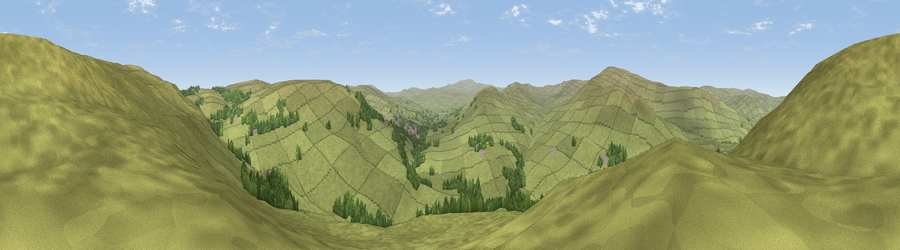

Viewpoint near Alston
#19026 in England · top 55% of its area beats it · near AlstonThe view, rendered

A 360° render of this exact spot computed from the terrain model, tree cover and land cover — summer colours, afternoon light, calibrated against photographs of famous viewpoints. Real trees, hedges and buildings will differ in detail.
The panorama
Grey silhouette: terrain skyline in each direction (720 bearings, Earth curvature and refraction included). Dashed green: skyline with trees (+15 m) and buildings (+8 m) as obstacles. Blue strip: how far the ground is visible on each bearing.
Where the view opens
Wedge length = distance to the farthest visible ground on that bearing (vegetation-aware). Rings at 10, 25 and 50 km.
What fills the view
93% grassland · 7% woodland
Angular shares of the visible panorama (visual magnitude), not map area. Landscape diversity 0.12 (0–1 Shannon).
Key numbers
More beautiful places nearby
The staircase of upgrades: each row has a higher view potential than everything closer. Driving times are estimates from straight-line distance, calibrated against real road routing — check an actual route before setting out.
| Place | Direction | Drive | Score |
|---|---|---|---|
| Viewpoint near Slaggyford | NNE · 1 km | ~3 min | 67.6 |
| Grey Nag | WSW · 5 km | ~11 min | 75.7 |
| Viewpoint near Renwick | SW · 8 km | ~17 min | 77.0 |
| Viewpoint near Cumrew | W · 12 km | ~23 min | 77.2 |
| Viewpoint near Melmerby | SSW · 13 km | ~24 min | 78.1 |
| Viewpoint near Cumrew | W · 15 km | ~27 min | 78.8 |
| Barrock Fell | W · 24 km | ~40 min | 81.1 |
| Viewpoint near Watermillock | SW · 38 km | ~57 min | 82.6 |
54.84059, -2.45502 · source: screening · position refined by local search. Computed location — check access rights before visiting.